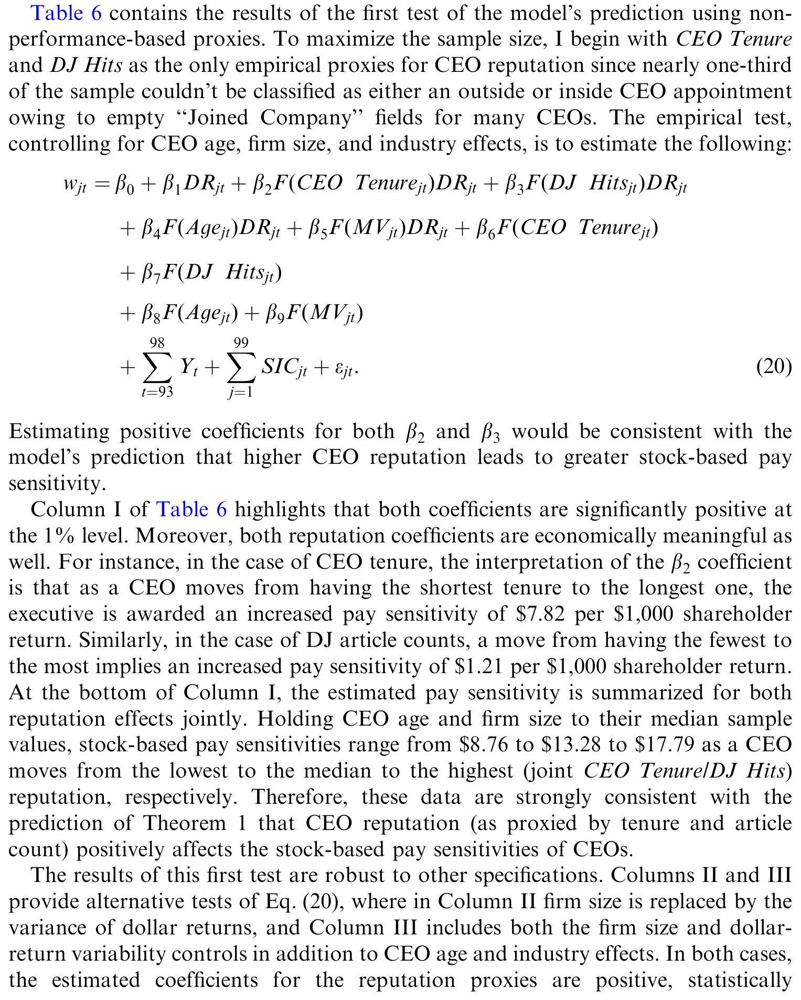
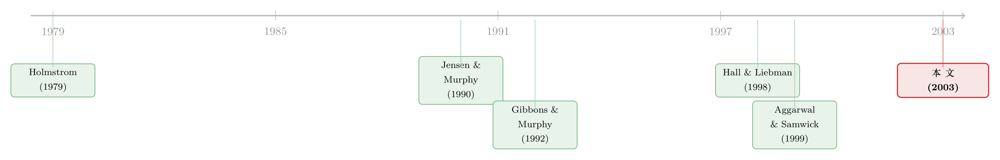

老板的「名声」，藏在他工资条里那根弦的松紧上
本文读的是 Milbourn (2003, Journal of Financial Economics)：他写了一个委托代理模型，证明 CEO 的薪酬—业绩敏感度（即股票「绑」CEO 绑得多紧）应当随 CEO 的声誉单调上升；再用 ExecuComp 上的四个声誉代理变量去对，发现仅仅"声誉"这一项，就能解释约 $9.03/每千美元股东财富变化的敏感度差异——量级与"公司规模"这个老牌解释变量（约 $20）已经在同一个数量级上。
1 一个被「平均数」藏起来的悬念
先从一个数字说起。Jensen and Murphy (1990) 第一次系统地度量"为业绩付酬"（pay-for-performance）时，得到一个让人有点泄气的结论：股东财富每变动 $1,000，一个普通 CEO 的"与公司挂钩的财富"平均只跟着变 $3.25。八年后，Hall and Liebman (1998) 把口径放宽——把 CEO 手里持有的股票和期权的市值变化也算进去——这个平均数一下子跳到了 $25.11，差不多是前者的八倍。
但真正有意思的，不是这个平均数被改写了多少。Hall 和 Liebman 顺手揭开了一件更扎眼的事：这个 $25.11 背后，是巨大的横截面离散。有的 CEO 被股票绑得死死的，有的几乎没被绑。同样是上市公司的一把手，凭什么待遇差这么多？
这就是悬念所在。一个自然的问法是：除了"公司规模""股价波动"这些显而易见的控制变量，还有没有一个被我们忽略、却又能系统性地解释这种离散的东西？
本文的回答只有两个字——声誉。
2 反直觉的起点：股价是「向前看」的
要理解这篇文章，得先接受一个乍看有点别扭的前提。
我们通常把股票当成一把"测 CEO 努力"的尺子：CEO 干得好，股价涨，于是用股价给他发薪，天经地义。可问题在于，股价测的从来不是过去，而是未来——它反映的是公司未来终值现金流的期望。而未来这家公司由谁来管，并不一定还是现在这位 CEO。
接着，一个关键的事实被引了进来：公司有权在中途炒掉现任 CEO，换一个从劳动力市场里随机抽来的人。于是股价在定价时，就必须把"这位现任将来会不会被换掉"这件事算进去。
然后，反转出现了。如果市场判断这位 CEO 几乎铁定会留任，那么股价里绝大部分内容讲的都是他的贡献——这时股价对他的努力非常敏感，是一把好尺子。可如果市场觉得他多半会被换掉，股价就会把更多权重押在那个"将来才会到任的替补"身上；而替补的努力跟现任此刻使不使劲毫无关系。于是股价对现任努力的敏感度被稀释了，尺子变钝了。
到这里，故事的内核已经呼之欲出：留任的可能性越高，股价对现任 CEO 越"有信息量"，就越值得把薪酬重重地压在股价上。而"留任的可能性"，恰恰是市场对这位 CEO 能力的事前评估——也就是他的声誉（reputation）。
这里要和 Gibbons and Murphy (1992) 的"任期效应"分清楚（下文还会回到这一点）。任期效应说的是：CEO 干得越久，市场对他能力的估计方差越小，所以敏感度上升。本文说的不是方差变小，而是留任概率这条全新的渠道——哪怕任期固定，声誉更高的 CEO 也该被绑得更紧。
3 模型：把「会不会被炒」一步步算进合约
这是一篇有完整理论模型的论文，值得把骨架拆开看。
事件顺序。 模型是单期的，但分几个阶段：
- 公司有一位能力未知的现任 CEO，市场对其能力的估计为 \(Z_1 \sim N(\bar{Z}_1,\,\sigma^2_{Z_1})\)，连 CEO 自己也不知道真实能力。
- 股东提出一份线性合约 \(W = S + bP\)：\(S\) 是固定薪水，\(b\in[0,1]\) 是薪酬—业绩敏感度，\(P\) 是股价。
- CEO 决定是否接受，并私下选择努力 \(e\in[0,\infty)\)。
- 市场观察到一个关于努力的、不可写入合约的噪声信号 \(Y\)，股价 \(P\) 形成。
- 股东再观察到一个关于能力的信号 \(s = Z_I + \nu\)，更新后验 \(Z_2\)；若 \(Z_2 < Z^{C}\) 则解雇，换一个先验为 \(Z_0\sim N(\bar{Z}_0,\sigma^2_{Z_0})\)、且令 \(\bar{Z}_0 \equiv 0\) 的替补。
- 终值现金流实现，博弈结束。
CEO 是风险厌恶的，效用为负指数型：
$$ U(W,e) = -\exp\!\Big[-r\Big(W - \tfrac{k}{2}e^2\Big)\Big] $$
其中 \(r\) 是风险厌恶系数，\(k>0\) 刻画对努力的厌恶。若留任，公司终值现金流是 \(X_I = e + Z_I + \varepsilon\)；若被换掉，则只剩替补的能力 \(X_R = Z_R + \varepsilon\)。交易员看到的努力信号是 \(Y = [e+\varepsilon] + o\)。
留任概率。 把"事前看，这位声誉为 \(Z_1\) 的 CEO 最终能留到博弈结束"的概率记作 \(G(Z_1)\)：
$$ 1 - G(Z_1) \equiv E\big[\Pr(Z_2 < Z^{C}\mid Z_1)\big] $$
由于信号正态，\(G(Z_1)\) 在 \(Z_1\) 上严格单调递增——声誉越高，越不容易被炒。这是整篇文章的发动机。
股价。 把现任与替补两种情形按留任概率混合，再加上一项独立噪声 \(x\)，股价写成（论文式 (8)）：
$$ P = G(Z_1)\Big\{\big[(1-\beta)e + \beta(e+\varepsilon+o)\big] + \bar{Z}_1 + \sigma_{Z_1}\tfrac{\phi(a)}{1-\Phi(a)}\Big\} + x $$
其中 \(\beta = \sigma^2_\varepsilon/(\sigma^2_\varepsilon+\sigma^2_o)\) 是市场从信号 \(Y\) 里"提取努力"的回归系数，\(a = (Z^{C}-\bar{Z}_1)/\sigma_{Z_1}\)，\(\phi,\Phi\) 是标准正态的密度与分布函数。注意那个 \(G(Z_1)\) 像一个总闸门：它越大，CEO 的努力 \(e\) 才越能"传导"进股价。相应地，股价方差为（式 (9)）：
$$ \mathrm{Var}(P) = [G(Z_1)]^2\,\beta^2\,(\sigma^2_\varepsilon+\sigma^2_o) + \sigma^2_x $$
CEO 的选择。 给定合约，CEO 最大化其确定性等价：
$$ \max_{e\ge 0}\; bG(Z_1)e - \tfrac{k}{2}e^2 - \tfrac{r}{2}b^2\mathrm{Var}(P) $$
一阶条件给出努力：\(e^{*} = bG(Z_1)/k\)。这一步本身就有直觉——CEO 的努力不仅随他分到的股价份额 \(b\) 上升，也随留任概率 \(G(Z_1)\) 上升：反正快被炒了，使劲也白搭。
股东的选择与最优敏感度。 股东在 CEO 的一阶条件约束下最大化公司价值，用的是 Holmstrom (1979)、Rogerson (1985)、Jewitt (1988) 的一阶方法。解出来的最优敏感度是（式 (14)）：
为什么 \(b^{*}\) 随声誉上升？ 关键的一步，是把式 (9) 代回式 (14)。注意 \(\mathrm{Var}(P)\) 里也藏着 \([G(Z_1)]^2\)，约掉之后：
$$ \frac{\mathrm{Var}(P)}{[G(Z_1)]^2} = \beta^2(\sigma^2_\varepsilon+\sigma^2_o) + \frac{\sigma^2_x}{[G(Z_1)]^2} $$
于是
$$ b^{*} = \frac{1}{1 + rk\Big(\beta^2(\sigma^2_\varepsilon+\sigma^2_o) + \dfrac{\sigma^2_x}{[G(Z_1)]^2}\Big)} $$
到这里就一目了然了。股价里那项独立噪声 \(\sigma^2_x\) 是固定的，而股价中真正承载 CEO 信息的部分会随 \(G(Z_1)\) 放大。声誉 \(Z_1\) 上升 \(\Rightarrow\) \(G(Z_1)\) 上升 \(\Rightarrow\) \(\sigma^2_x/[G(Z_1)]^2\) 下降 \(\Rightarrow\) 分母变小 \(\Rightarrow\) \(b^{*}\) 上升。这就是 Theorem 1：最优薪酬—业绩敏感度在签约时点的声誉评估 \(Z_1\) 上严格递增。
说白了，模型把一句很朴素的话翻译成了数学：当一个人大概率会一直在场，他的努力才值得被重重地标价。
4 识别：用四把尺子去量「声誉」
理论给了一个可证伪的预测，难点立刻转移到实证：声誉看不见，怎么量？
Milbourn 用了四个对市场公开、可观测的代理变量：
- (i) CEO 任期（tenure）：在位越久，意味着董事会历史上一直倾向于留住他；
- (ii) 商业报道篇数：用 Dow Jones News Retrieval 检索 CEO 名字出现在商业文章中的次数——声誉高的人见报更勤；
- (iii) 是否空降（外部任命）：外部人要坐上 CEO 位子，门槛被认为高于已握有公司专属知识的内部人；
- (iv) 任内行业调整后的公司业绩：在任期间相对同行干得越好，声誉越高。
识别上几个值得点名的细节：估计薪酬—业绩敏感度时，沿用 Jensen-Murphy 的口径——把 CEO 年度薪酬流（工资、奖金、期权授予等）加上其持有股票与期权的市值变化，对股东的美元回报回归。但作者用的是中位数回归（median regression）而非 OLS，专门压制离群值的影响。控制变量则包括 CEO 年龄、公司规模、股东美元回报的波动、以及行业固定效应。一个干净化处理：所有公司创始人被剔除——因为创始人的"留任概率"逻辑完全是另一回事。
这里要诚实：四个代理变量没有一个是"声誉"的外生冲击，它们更像是与声誉同向相关的可观测指标。所以这是一篇理论预测 + 横截面相关性验证的文章，而不是一个准自然实验。任期尤其尴尬——它同时扛着 Gibbons-Murphy 的"方差下降"渠道和本文的"留任概率"渠道，两条线很难干净地切开（下面 Q&A 再谈）。
5 主要结果：声誉的「价钱」，和公司规模一个量级
数据是 ExecuComp 1993–1998 年的样本（S&P 500 / MidCap / SmallCap 成分股的 CEO）。结论非常一致：四个声誉代理变量，无一例外都与薪酬—业绩敏感度正相关，且在统计与经济意义上都显著。
把量级摆出来才有冲击力。以"任期 + 见报篇数"这一组代理为例，在剔除 CEO 年龄、公司规模、行业效应之后，单单声誉能解释的敏感度跨度是 $9.03/每千美元股东财富变化。作为参照，公司规模这个最经典的解释变量，自己解释的跨度也不过约 $20——声誉已经和它站在同一个数量级上了。
底层的估计是这样：一位年龄中位、公司规模中位的 CEO，如果任期最短、见报最少，合约给到 $8.76/每千美元；而同样规模的公司、同样年龄的 CEO，若任期最长、见报最多，合约给到 $17.79/每千美元。换言之，仅仅"声誉"从最低换到最高，敏感度就翻了一倍还多。把它放回文献坐标里：Jensen-Murphy 的平均 $3.25、Hall-Liebman 的平均 $25.11，本文用一个变量就吃掉了其间相当一段横截面差异。其余三个声誉度量也给出"完全类似"的结果。

Table 6: contains the results of the first test of the model’s prediction using non-
6 文献脉络：从「为业绩付酬」到「为声誉调弦」
这条线的源头是 Jensen and Murphy (1990)——他们第一次把"激励合约该让 CEO 与股东共担风险"这个代理理论预测拿到大样本上检验，留下了那个著名的 $3.25。
接着，Holmstrom (1979) 奠定的道德风险与可观测性框架，连同 Rogerson (1985)、Jewitt (1988) 对一阶方法的辩护，给了后来所有线性合约模型一套可用的数学工具。
然后，一个自然的问题是：敏感度的横截面差异从哪来？两条主线给出了不同答案。一条是 Gibbons and Murphy (1992) 的职业生涯关切（career concerns）——任期越长，能力估计方差越小，敏感度越高；另一条是 Aggarwal and Samwick (1999) 的风险渠道——业绩波动越大，最优敏感度越低（这正是本文式 (14) 里 \(\mathrm{Var}(P)\) 的作用）。Hall and Liebman (1998) 则用更全面的数据把"巨大离散"这个事实摆上了桌面。

本文（Milbourn, 2003）的位置，就嵌在 Gibbons-Murphy 与 Aggarwal-Samwick 之间、又自成一格：它既不是单纯的方差故事，也不是单纯的风险故事，而是引入了一条留任概率渠道——公司可以炒人这件事本身（Hermalin and Weisbach, 1998 与 Berkovitch, Israel and Spiegel, 2000 对解雇规则的刻画为其提供了制度背景；Warner, Watts and Wruck, 1988 则记录了高管变更的股价反应），通过前瞻性的股价，反过来塑造了今天该把合约的弦调多紧。
7 评论与延伸（Q&A + 研究方向）
(a) 几个可能的疑问
Q：这和 Gibbons-Murphy 的"任期效应"到底差在哪？
差在渠道。Gibbons-Murphy 说的是估计方差下降：CEO 干得久，市场对其能力的不确定性 \(\mathrm{Var}(Z_2)<\mathrm{Var}(Z_1)\) 变小，股价方差随之变小，敏感度上升。本文说的是留任概率上升 \(G(Z_1)\)：哪怕把任期、把方差都固定住，只要声誉更高、更可能留任，股价就更多地承载现任的信息，敏感度也该更高。作者特意强调，本文的范围（range）效应不受 CEO 年龄或公司规模选择的影响——它是声誉这条独立的轴。
Q：四个代理变量里，任期不是同时被两套理论"征用"了吗？这不就内生混淆了？
是的，这是最大的软肋，作者自己也承认。任期既降低能力估计方差（Gibbons-Murphy 渠道），又是留任倾向的体现（本文渠道）。本文的辩护策略是"组合拳"：见报篇数、是否空降、行业调整业绩这三个代理不直接走方差渠道，却给出了与任期一致的结论；四把尺子同向，才让"声誉"这个共同因子更可信一些。但严格的渠道分离，本文并没有做到。
Q：为什么用中位数回归而不是 OLS？这会不会是在"挑"结果？
高管薪酬数据的离群值极其凶猛——少数巨额期权授予或巨额市值波动足以主导 OLS 斜率。中位数回归是为了让估计反映"典型 CEO"而非被几个尾部样本带跑。这更像是稳健性考量而非择优，但它确实意味着报告的量级是"中位意义"上的，不能直接外推到尾部那些天价合约。
Q：模型假设替补 CEO 完全外生、且不付出努力，这不是太强了吗？
作者明说这个假设"无害（innocuous）"：模型真正需要的，只是股价里有一部分反映的是替补而非现任的贡献。替补到底出不出力、能力分布如何，都不影响定性结论——只要"被换掉"会冲淡现任在股价里的权重就够了。当然，若做成重复博弈、让替补也内生选择努力，比较静态可能更丰富。
Q：声誉高就该被绑得更紧——这难道不和"明星 CEO 谈判力强、反而能要到更松的合约"的直觉相反吗？
这正是本文反直觉、也最有价值的地方。流行直觉是从谈判力出发的；本文是从信息量出发的。它不谈 CEO 能不能讨价还价，而问"股价作为一把尺子，对这位 CEO 准不准"。准，就值得重押。两种力量在现实中可能并存、方向相反，所以经验上能找到正相关，本身就是对"信息量渠道"不弱的一个支持。
Q：参与约束（individual rationality）哪去了？为什么不影响最优 \(b\)？
因为负指数效用 + 线性合约下，固定薪水 \(S\) 可以独立地把参与约束顶满，而不触动分享比例 \(b\)。所以最优"分享规则" \(b^{*}\) 与保留工资无关——作者只刻画分享规则，不刻画总工资水平。这是 CARA-正态框架的标准便利。
(b) 几个可能的研究问题与提案
1. 把"留任概率"渠道搬到强制 CEO 更替的准实验里。
【经济故事】本文的核心机制是 \(G(Z_1)\)，但实证用的是横截面代理。若能找到外生改变留任概率的冲击（如行业层面的反收购立法、董事会独立性改革），就能直接检验"留任概率上升 → 敏感度上升"，把声誉从一堆相关变量里干净地解出来。【可行性】中。ExecuComp + 治理数据可得；难在找到只动留任概率、不动其他的工具。可参考《炒掉 CEO，董事是英雄还是「帮凶」？》与《炒掉一个 CEO 之后，公司真的变好了吗》里对更替事件的处理。
2. 把同样的逻辑搬到公司债与 CDS 定价上。
【经济故事】债权人也"向前看"：一家公司的信用利差，应当部分反映"现任管理层会不会被换、换了之后违约风险如何"。若管理层声誉影响留任概率，它是否也通过债券价格的信息量，进而影响债务契约的业绩敏感条款（如基于业绩的利率重置、契约条款松紧）？【可行性】中。需要 ExecuComp 声誉代理 + TRACE/Mergent 债券数据匹配；识别上同样受声誉内生性困扰，但债券市场提供了一个独立于股价的"第二把尺子"。
3. 外资持有人会改变"声誉—敏感度"的斜率吗？
【经济故事】外资机构通常更依赖可观测、可比较的"声誉信号"（如英文商业媒体曝光、跨国业绩排名）来评估它们不熟悉的管理层。若外资持股高的公司，其薪酬合约对声誉代理更敏感，就说明"信息量渠道"会随信息生产者的构成变化。【可行性】中高。FactSet/13F + ExecuComp 可构造外资持股；用 MSCI 纳入等可投资度冲击做识别。
4. 见报篇数：声誉的度量，还是声誉的成因？
【经济故事】本文把媒体曝光当成声誉的镜子，但媒体也可能制造声誉（公关投放、CEO 个人品牌经营）。若能用外生的媒体覆盖冲击（如某商业媒体的版面扩张/记者离职）切开"反映 vs 制造"，会直接关系到本文代理变量的解释。【可行性】中。需要细粒度媒体数据与曝光的外生变动，doable 但数据工程量大。
5. 把模型做成动态：声誉的"积累—折旧"如何写出合约的时间路径？
【经济故事】单期模型把声誉当成签约时点的状态变量。现实里声誉会随每期业绩信号被贝叶斯更新、也会"折旧"。一个动态版本能预测：敏感度沿 CEO 任期不是单调的，而是先升后随"换帅期权价值"下降而回落——这正好接上 Berkovitch-Israel-Spiegel (2000) 关于解雇阈值随任期上升的结论。【可行性】中低。理论可做；实证要把同一 CEO 的敏感度面板拆出来，样本与噪声都是挑战。
我的判断
本文的贡献在于把一个看似与薪酬无关的事实——公司可以炒人——变成了薪酬设计的一阶决定因素。它给出的不是又一个相关性，而是一条清晰、可证伪、且与既有"方差/风险"渠道正交的新机制：前瞻性的股价让"留任概率"渗进了今天合约的松紧。这种"用一个朴素制度事实撬动一个标准模型"的做法，是好的理论实证结合该有的样子。
但识别上的担忧是实打实的：四个代理变量没有一个外生，任期更是横跨两套理论；中位数回归虽稳健，却也把结论限定在"典型 CEO"上；而模型的单期、外生替补设定，让它讲的是比较静态而非动态路径。所以我更愿意把这篇文章读成一个强有力的机制提案 + 方向一致的经验支持，而不是一个因果定论。
接下来最想看到的，是有人用一个真正外生改变留任概率的冲击，把 \(G(Z_1)\) 这条渠道从声誉的代理变量泥潭里单独拎出来——哪怕只在一个干净的子样本里。如果那时敏感度依旧随留任概率上升，这个故事就从"漂亮"变成"可信"了。
参考文献
- Aggarwal, R., Samwick, A. (1999). The other side of the trade-off: the impact of risk on executive compensation. Journal of Political Economy 107, 65–105.
- Berkovitch, E., Israel, R., Spiegel, Y. (2000). Managerial compensation and capital structure. Unpublished working paper, Tel Aviv University.
- Gibbons, R., Murphy, K. J. (1992). Optimal incentive contracts in the presence of career concerns: theory and evidence. Journal of Political Economy 100, 468–505.
- Hall, B., Liebman, J. B. (1998). Are CEOs really paid like bureaucrats? Quarterly Journal of Economics 111, 653–691.
- Hermalin, B., Weisbach, M. (1998). Endogenously-chosen boards of directors and their monitoring of the CEO. American Economic Review 88, 96–118.
- Holmstrom, B. (1979). Moral hazard and observability. The Bell Journal of Economics 10, 74–91.
- Jensen, M., Murphy, K. J. (1990). Performance pay and top-management incentives. Journal of Political Economy 98, 225–262.
- Jewitt, I. (1988). Justifying the first-order approach to principal-agent problems. Econometrica 56(5), 1177–1190.
- Milbourn, T. T. (2003). CEO reputation and stock-based compensation. Journal of Financial Economics 68(2), 233–262.
- Rogerson, W. (1985). Repeated moral hazard. Econometrica 53, 69–76.
- Warner, J., Watts, R., Wruck, K. (1988). Stock prices and top management changes. Journal of Financial Economics 20, 461–492.